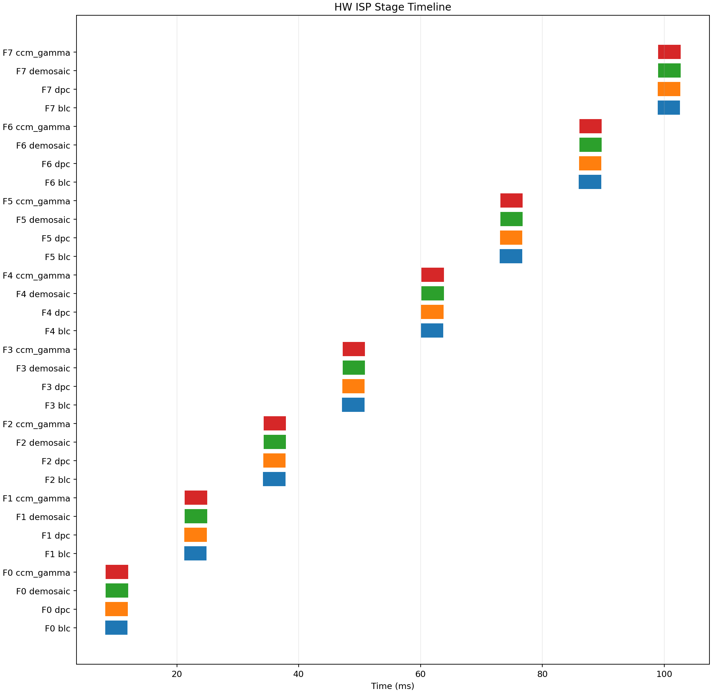
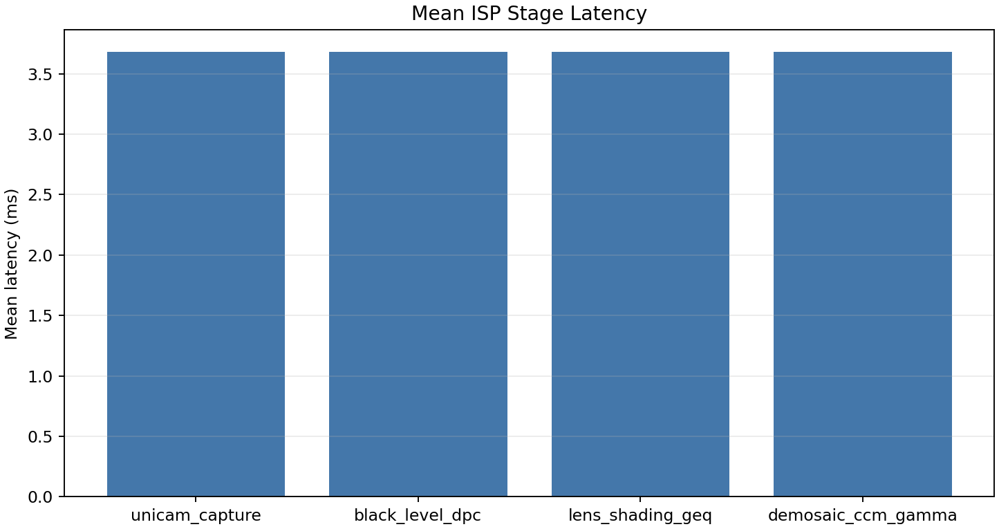
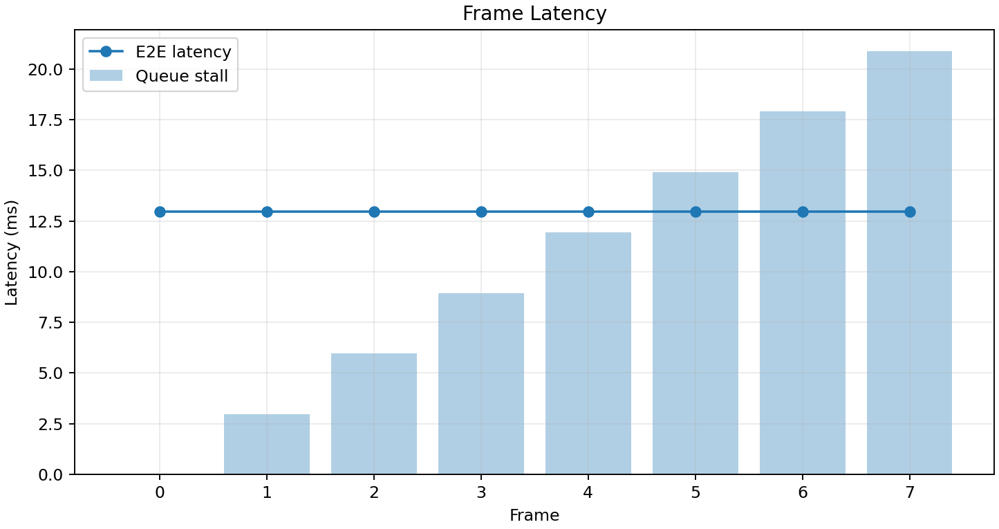
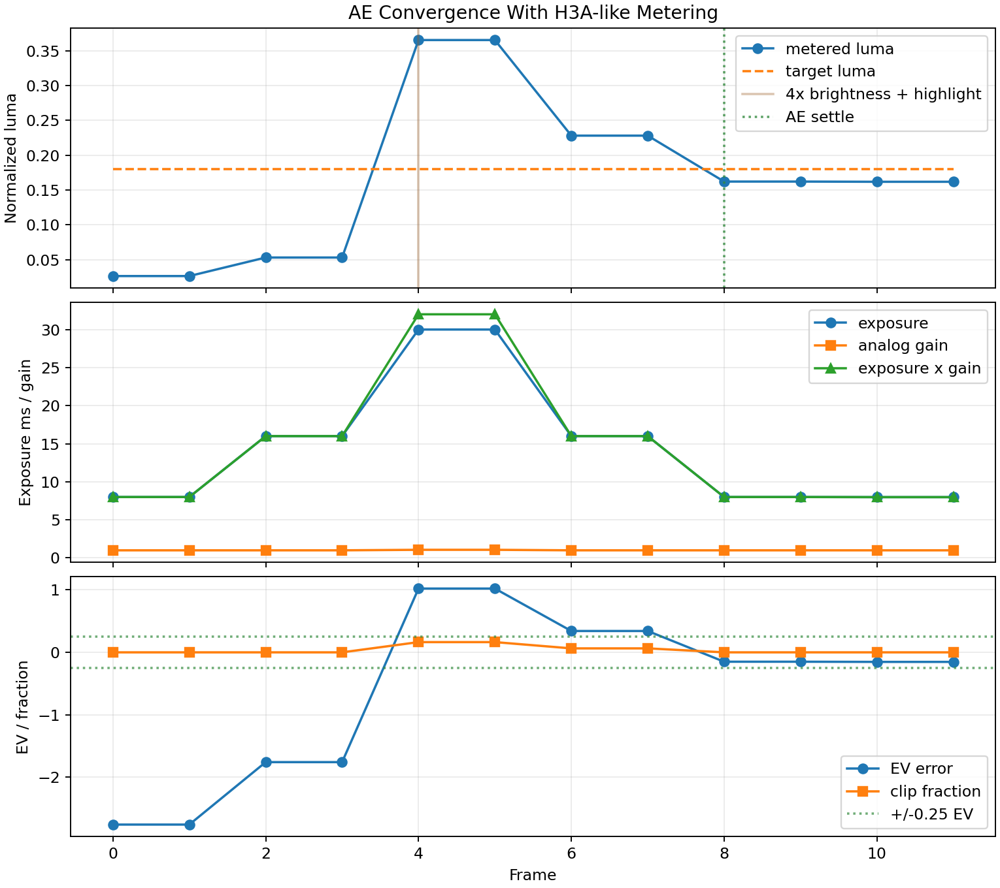
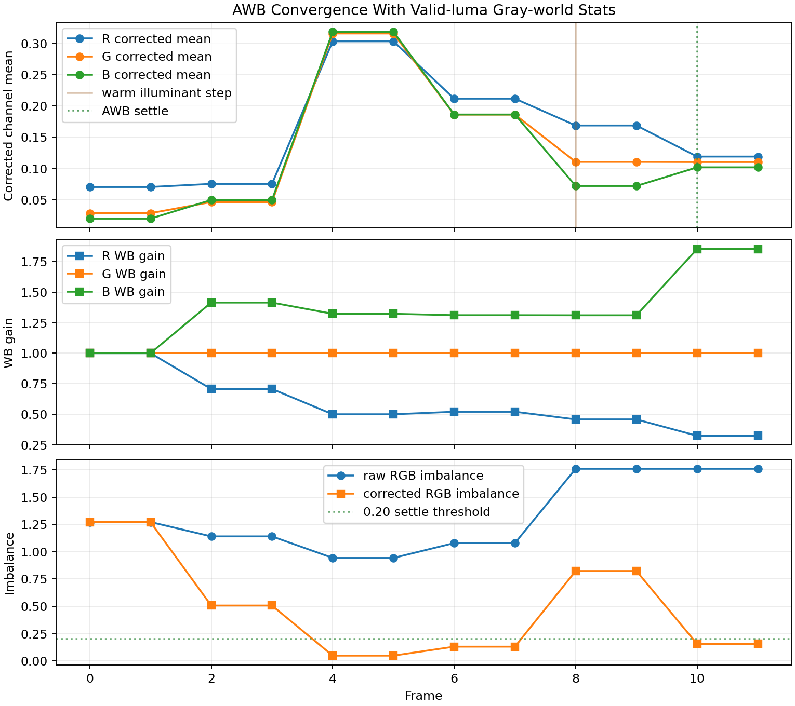
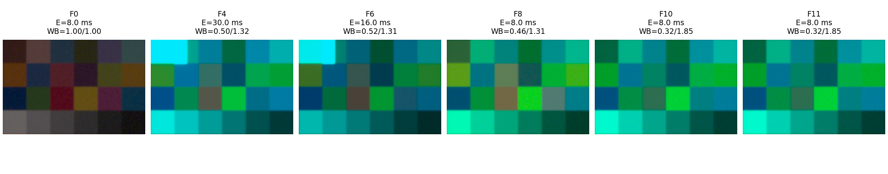

HW ISP Simulation Report
This report visualizes deterministic timing metadata layered on top of the normal pyisetcam image pipeline. Pixel values still come from the existing camera pipeline; this report focuses on exposure, readout, ISP stage, queue, DMA, and app-visible timing.
Frames8
Mean E2E12.954 ms
Max E2E12.954 ms
Total Queue Stall82.704 ms
Max Queue Stall20.676 ms
Queue stall is reported separately from per-frame E2E latency. E2E latency is measured from the actual request time after stall to app visibility.
Timing Figures

Per-frame ISP stage spans in wall-clock time.

Mean modeled latency by HW ISP block.

Application-visible latency and queue back-pressure per frame.
Frame Summary
| Frame | Requested ms | Actual request ms | Readout end ms | ISP done ms | App visible ms | E2E ms | Queue stall ms | Warmup | AE stats frame | AWB stats frame |
|---|---|---|---|---|---|---|---|---|---|---|
| 0 | 0.000 | 0.000 | 12.226 | 12.014 | 12.954 | 12.954 | 0.000 | True | None | None |
| 1 | 10.000 | 12.954 | 25.179 | 24.967 | 25.907 | 12.954 | 2.954 | True | None | None |
| 2 | 20.000 | 25.907 | 38.133 | 37.921 | 38.861 | 12.954 | 5.907 | False | 0 | 0 |
| 3 | 30.000 | 38.861 | 51.087 | 50.875 | 51.815 | 12.954 | 8.861 | False | 1 | 1 |
| 4 | 40.000 | 51.815 | 64.041 | 63.829 | 64.769 | 12.954 | 11.815 | False | 2 | 2 |
| 5 | 50.000 | 64.769 | 76.994 | 76.782 | 77.722 | 12.954 | 14.769 | False | 3 | 3 |
| 6 | 60.000 | 77.722 | 89.948 | 89.736 | 90.676 | 12.954 | 17.722 | False | 4 | 4 |
| 7 | 70.000 | 90.676 | 102.902 | 102.690 | 103.630 | 12.954 | 20.676 | False | 5 | 5 |
3A AE/AWB Behavior
This sequence enables apply_to_image=True. Frame statistics generate AE/AWB controls that apply two frames later, so the plots show delayed control response rather than instantaneous correction.

H3A-like metered luma, clipping fraction, EV error, exposure time, and analog gain across a 4x brightness step with a highlight patch.

Valid-luma gray-world RGB means, channel imbalance, and white-balance gains across a warm-illuminant step.

Representative rendered frames before and after AE/AWB delayed control application.
3A Validation Verdict
| Validation | Status | Evidence |
|---|---|---|
| AE settle | PASS | settle frame 8, final error -0.153 EV |
| AWB settle | PASS | settle frame 10, final imbalance 0.156 |
| Clamp compliance | PASS | exposure, analog gain, and WB gains remain inside configured limits |
| Warmup delay mapping | PASS | frames before the configured control delay are marked warmup |
| Clip reduction | PASS | max clip before response 0.1638, after response 0.0635 |
Default thresholds: AE |EV error| <= 0.25 for two consecutive frames; AWB corrected RGB imbalance <= 0.20 for two consecutive frames.
3A Frame Controls
| Frame | Warmup | AE source | AWB source | Exposure ms | Analog gain | Metered luma | EV error | Clip fraction | Target | WB R | WB G | WB B | AWB valid pixels | Corrected RGB imbalance | Next AE frame | Next AWB frame |
|---|---|---|---|---|---|---|---|---|---|---|---|---|---|---|---|---|
| 0 | True | None | None | 8.000 | 1.000 | 0.0266 | -2.758 | 0.0000 | 0.1800 | 1.000 | 1.000 | 1.000 | 0.599 | 1.272 | 2 | 2 |
| 1 | True | None | None | 8.000 | 1.000 | 0.0266 | -2.758 | 0.0000 | 0.1800 | 1.000 | 1.000 | 1.000 | 0.599 | 1.272 | 3 | 3 |
| 2 | False | 0 | 0 | 16.000 | 1.000 | 0.0532 | -1.758 | 0.0000 | 0.1800 | 0.707 | 1.000 | 1.414 | 0.914 | 0.507 | 4 | 4 |
| 3 | False | 1 | 1 | 16.000 | 1.000 | 0.0532 | -1.758 | 0.0000 | 0.1800 | 0.707 | 1.000 | 1.414 | 0.914 | 0.507 | 5 | 5 |
| 4 | False | 2 | 2 | 30.000 | 1.067 | 0.3653 | 1.021 | 0.1638 | 0.1800 | 0.500 | 1.000 | 1.322 | 0.937 | 0.049 | 6 | 6 |
| 5 | False | 3 | 3 | 30.000 | 1.067 | 0.3653 | 1.021 | 0.1638 | 0.1800 | 0.500 | 1.000 | 1.322 | 0.937 | 0.049 | 7 | 7 |
| 6 | False | 4 | 4 | 16.000 | 1.000 | 0.2281 | 0.342 | 0.0635 | 0.1800 | 0.521 | 1.000 | 1.311 | 0.943 | 0.131 | 8 | 8 |
| 7 | False | 5 | 5 | 16.000 | 1.000 | 0.2281 | 0.342 | 0.0635 | 0.1800 | 0.521 | 1.000 | 1.311 | 0.943 | 0.131 | 9 | 9 |
| 8 | False | 6 | 6 | 8.000 | 1.000 | 0.1622 | -0.150 | 0.0001 | 0.1800 | 0.458 | 1.000 | 1.310 | 0.999 | 0.824 | 10 | 10 |
| 9 | False | 7 | 7 | 8.000 | 1.000 | 0.1622 | -0.150 | 0.0001 | 0.1800 | 0.458 | 1.000 | 1.310 | 0.999 | 0.824 | 11 | 11 |
| 10 | False | 8 | 8 | 7.985 | 1.000 | 0.1619 | -0.153 | 0.0001 | 0.1800 | 0.324 | 1.000 | 1.853 | 0.999 | 0.156 | 12 | 12 |
| 11 | False | 9 | 9 | 7.985 | 1.000 | 0.1619 | -0.153 | 0.0001 | 0.1800 | 0.324 | 1.000 | 1.853 | 0.999 | 0.156 | 13 | 13 |